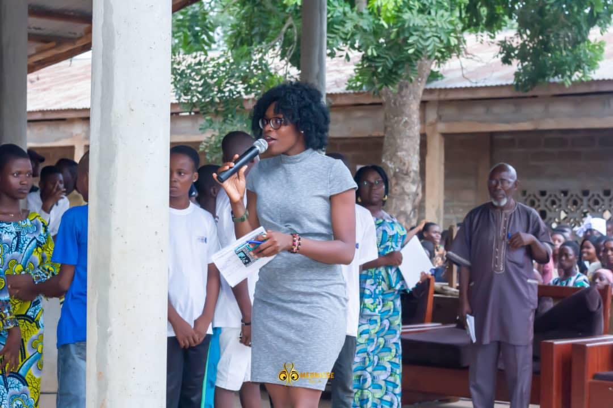

Communication institutionnelle et digitale
Porter des messages clairs, coherents et utiles pour rendre une voix plus visible.
Expertises
Ma force tient dans une polyvalence claire : porter un message, tenir le bon ton et creer une presence qui reste en memoire.

Domaines d'action
Institutions, evenements, marques, causes et initiatives citoyennes : le point commun reste la qualite du message et de la presence.
Porter des messages clairs, coherents et utiles pour rendre une voix plus visible.
Creer du rythme, de la presence et une vraie connexion avec le public.
Valoriser des projets, des marques et des causes avec authenticite et clarte.
Mobiliser autour d'initiatives jeunesse et sociales en restant proche du terrain.
Accompagner l'expression creative et la presence publique d'univers artistiques.
Organiser, representer et faire avancer les actions avec energie et rigueur.
Methode
Mon travail consiste a transformer une intention en perception claire. Cela demande de comprendre le contexte, le public, le bon ton et le bon niveau d'energie.
Quand le message est bien porte, il ne se contente pas d'etre entendu. Il circule, il reste et il donne envie d'agir.
Parcours
La page Parcours rassemble les roles, les engagements et les cadres dans lesquels cette posture s'exprime deja.